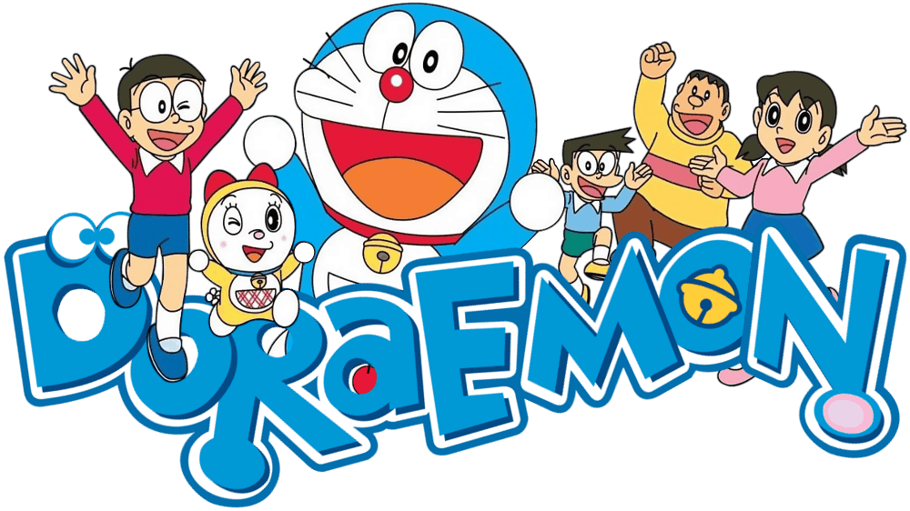

Doraemon Fan Page
Your Favorite Time Traveling Cat

Home
About
Product
Contact
Doraemon is a beloved Japanese cartoon cat that has captured the hearts of fans worldwide. Created by Fujiko F. Fujio, Doraemon first appeared in manga form in 1969 and quickly became a cultural phenomenon in Japan. The character has since been adapted into numerous anime series, movies, and video games, as well as merchandise such as toys, clothing, and accessories. Doraemon is known for his iconic appearance, with his blue and white robotic cat-like features, as well as his magical pocket, which contains various gadgets that he uses to help his human friend, Nobita Nobi. With his humorous antics and heartwarming stories, Doraemon has become a timeless classic and a symbol of Japanese pop culture.
Doraemon is a fictional character in Japanese pop culture that has been popular since the late 1960s. He is a blue and white robotic cat from the 22nd century who travels back in time to help a young boy named Nobita Nobi with his everyday problems. Doraemon has a special pouch on his belly called the "four-dimensional pocket" that contains various gadgets and tools from the future, which he uses to aid Nobita.
Over the years, Doraemon has become a cultural icon in Japan and is widely recognized around the world. He has been featured in numerous anime series, movies, and video games, as well as in books and comics. Doraemon is beloved by people of all ages and has become a symbol of the optimistic and hopeful spirit of Japanese pop culture.